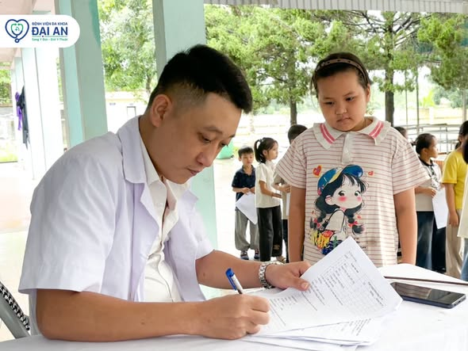
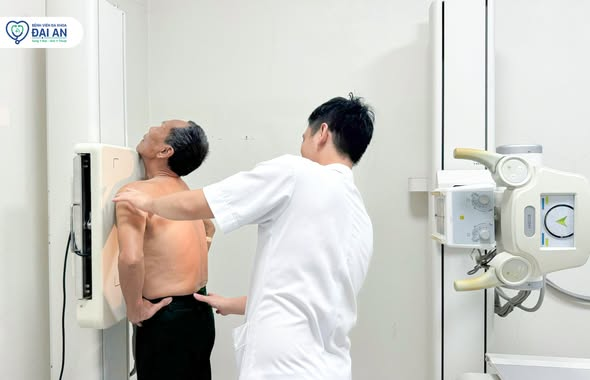
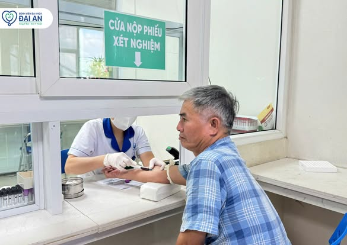

Bệnh viện Đa khoa Đại An — Sáng y đức, giỏi y thuật
CHĂM SÓC TOÀN DIỆN CHO CẢ GIA ĐÌNH
DỊCH VỤ NỔI BẬT
CHỦ ĐỘNG HÔM NAY, AN TÂM NGÀY MAI
Sức khỏe của bạn. Tâm huyết của chúng tôi.
CON NGƯỜI LÀM NÊN SỰ KHÁC BIỆT
ĐỘI NGŨ CHĂM SÓC

Hình ảnh hoạt động thực tế từ fanpage Đại AnTẬN TÂM TỪ NHỮNG ĐIỀU NHỎ NHẤT
Lắng nghe bằng sự thấu hiểu.
Chăm sóc bằng cả trái tim.
Mỗi cuộc thăm khám là một cơ hội để lắng nghe, chia sẻ và đồng hành. Đại An hướng đến trải nghiệm chăm sóc gần gũi cho người bệnh và gia đình.
Hồ sơ và lịch khám từng bác sĩ sẽ được cập nhật sau khi bệnh viện xác nhận.
TÌM ĐÚNG CHUYÊN KHOA BẠN CẦN
CHUYÊN KHOA
AN TÂM TRONG TỪNG TRẢI NGHIỆM
Không gian chăm sóc.
Gần gũi và tận tình.
Từ tiếp đón, thăm khám đến xét nghiệm và chẩn đoán hình ảnh, mỗi bước đều hướng đến sự thuận tiện cho người bệnh.


ĐẠI AN LUÔN BÊN BẠN
Thông tin cần thiết cho một hành trình thăm khám thuận tiện.
NHỊP SỐNG ĐẠI AN
TIN TỨC & HOẠT ĐỘNG
Tóm lược từ fanpage Đại An. Mỗi bài viết có liên kết đến nguồn gốc.
GIẢI ĐÁP TRƯỚC KHI ĐẾN KHÁM
Bạn hỏi, Đại An lắng nghe.
Để mỗi lần đến viện đều là một trải nghiệm an tâm.
0947 907 636Đặt lịch khám tại Đại An như thế nào?
Gọi hotline 0947 907 636 hoặc liên hệ fanpage. Biểu mẫu trên website là trải nghiệm demo, chưa tạo lịch khám thực tế.
Tôi cần chuẩn bị những giấy tờ gì?
Mang theo giấy tờ tùy thân, thông tin BHYT và hồ sơ khám trước đây nếu có. Liên hệ bệnh viện để được hướng dẫn phù hợp với dịch vụ.
Bệnh viện có khám vào cuối tuần không?
Fanpage Đại An thông báo làm việc cả thứ Bảy và Chủ nhật. Vui lòng gọi trước để xác nhận lịch chuyên khoa.
ĐỪNG ĐỂ SỨC KHỎE CHỜ ĐỢI